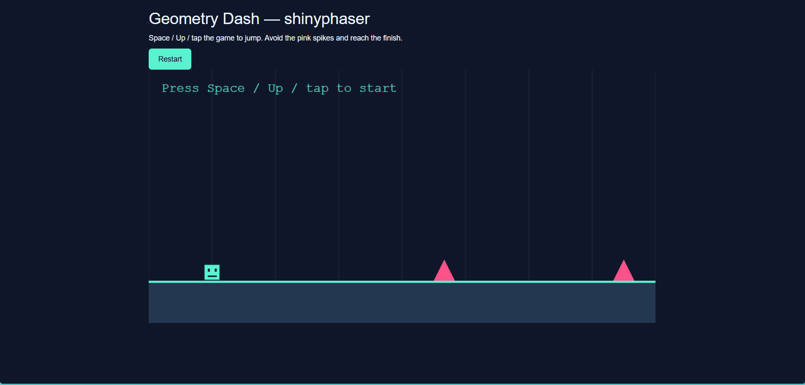

This package provides an R Shiny interface to selected features of the Phaser 3 game framework.

What you can do with shinyphaser
With the current API, you can build small-to-medium 2D game-like interactions in Shiny, including:
- 🎮 creating a game canvas in your Shiny UI,
- 🧩 adding images and animated sprites,
- ⌨️ attaching keyboard-based player controls,
- 💥 defining overlap and collision rules between objects,
- 🔔 reacting to game events from R server logic.
Installation
Install the stable release from CRAN:
install.packages("shinyphaser")Install the development version from GitHub:
# install.packages("pak")
pak::pak("maciekbanas/shinyphaser")API scope
shinyphaser is intentionally more than a one-to-one translation of the Phaser API. Alongside wrappers for scene objects and physics operations, it includes reusable, browser-side behaviours when they remove substantial Shiny round trips and are useful across game genres. For example, Sprite$start_approach_on_sight() can drive guards, animals, vehicles, or simulation agents.
Higher-level helpers belong in the package when they:
- operate on generic Phaser concepts rather than an example’s story or rules,
- need browser-speed updates that would be inefficient through the Shiny server, and
- remain composable with lower-level methods such as
set_in_motion()andstop_motion().
Example-specific quests, combat rules, dialogue, and map progression remain in example applications. This keeps the core API broadly useful without limiting it to thin Phaser bindings.
Learn by example
For a full walkthrough (from static background to movement, animation, overlap, and collision), see Build your first shinyphaser game
For a simple runner with gravity, jumping, and obstacles, see Build a Geometry Dash-style runner.
For the complete list of supported browser expressions and guidance on when to use ordinary R callbacks, see Choose between browser and server actions.

Example games created with shinyphaser
Three games are included in inst/examples, each with its own assets:
- Hedgehog: collect apples, avoid enemies, and progress through three levels. Play online.
- Geometry Dash: jump over spikes in a one-button runner and reach the finish.
- Swamps RPG: explore the Mushroom Swamps, fight enemies, and save your game.
With the current development version of shinyphaser installed, run each game from the repository root: